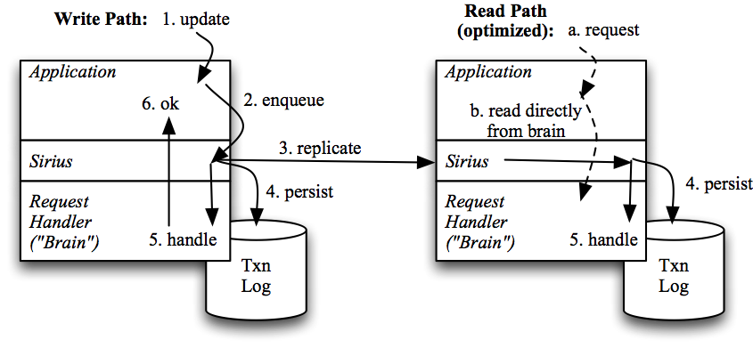
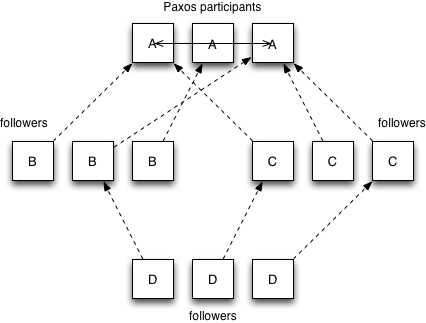

At Comcast, our applications need convenient, low-latency access to important reference datasets. For example, our XfinityTV websites and apps need to use entertainment-related data to serve almost every API or web request to our datacenters: information like what year Casablanca was released, or how many episodes were in Season 7 of Seinfeld, or when the next episode of The Voice will be airing (and on which channel)!
We traditionally managed this information with a combination of relational databases and RESTful web services but yearned for something simpler than the ORM, HTTP client, and cache management code our developers dealt with on a daily basis. As main memory sizes on commodity servers continued to grow, however, we asked ourselves:
How can we keep this reference data entirely in RAM, while ensuring it
gets updated as needed and is easily accessible to application developers?
The Sirius distributed system library is our answer to that question. Sirius is written in Scala and uses the Akka actor system under the covers, but is easily usable by any JVM-based language.
Features
Sirius offers developers the following combination of properties:
- Simple and semantically transparent interface for application developers, including the freedom to use arbitrary, native data structures for the in-memory representation of the reference data.
-
Eventually consistent, near real-time replication of reference data updates, even across wide-area networks between datacenters.
-
Persistence management and automated recovery after application restarts.
In short, Sirius gives you access to your reference data with arbitrary, native data structures while handling the distributed system heavy lifting for you.
System Architecture
Sirius is built around a model where an external system of record (or an intermediate) is responsible for publishing updates into an application cluster. This push-based model inverts the usual pull-based model and provides two major benefits:
(1) a simple library interface
(2) easy degradation—if the publisher becomes unavailable the application still has access to a (temporarily) stale mirror of the dataset.

The overall flow is shown in the diagram above. When an application receives an update, it hands the update off to Sirius as either a "PUT" or "DELETE"—Sirius provides a straightforward key-value interface. Sirius then uses the Paxos protocol to assign the update a globally consistent sequence number and ensure it gets replicated to all cluster members; updates are also recorded in local transaction logs. Finally, Sirius invokes a callback, one update at a time, to let the application know it can update its in-memory mirror (affectionately called the application's "brain" by our developers). This same callback is used when replaying a log to rebuild the application's brain at startup time.
On the read path, the application can simply read directly from the native data structures in its brain, providing convenient, low-latency access.
Replication
Sirius also provides a mechanism for very flexible replication topologies. Our implementation includes a catch-up protocol to allow participating cluster members to retrieve missing updates from other nodes (whether due to lost messages or because a server was offline temporarily). We are able to re-use this same protocol to provide for passive cluster members that do not participate in Paxos but rather just play the role of "fast followers." Sirius cluster members are currently statically configured; if a server finds its address in the list of cluster members, it participates in the Paxos protocol, but if it doesn't, it becomes a follower.

For example, consider the example shown above showing four different clusters (possibly in different datacenters) labeled A-D. Clusters, A, B, and C could all have the same configuration containing just the servers in cluster A. This causes cluster A to run Paxos, but the members of clusters B and C to periodically catch up from randomly selected members of A. Meanwhile, cluster D could be configured with a membership list containing all the members of clusters B and C; this will cause the D nodes to catch up from randomly selected members of both clusters (even though neither of them is actually the primary Paxos cluster).
Sirius thus lets you set up very a very flexible mesh of replication so that you could scale a Paxos "ingest" cluster separately from clusters that serve clients directly—possibly even different applications with a need for the same reference dataset.
Operational Experiences
Multiple teams and products within Comcast have been using Sirius-enabled applications in production since August 2012—nearly two years with relatively few problems. Sirius was designed to be operationally friendly from the beginning and includes:
- Automatic compaction and management of the local transaction logs
- Command-line tools for working with the logs
- Automatic registration of operational metrics via JMX if provided with an MBean server
- Graceful degradation during many types of failures and automatic recovery afterwards
Contributors Wanted!
We're keen to get your feedback and pull requests on the main project repository at Github. If you are interested in building robust distributed systems like Sirius, you should also head on over to our jobs site!